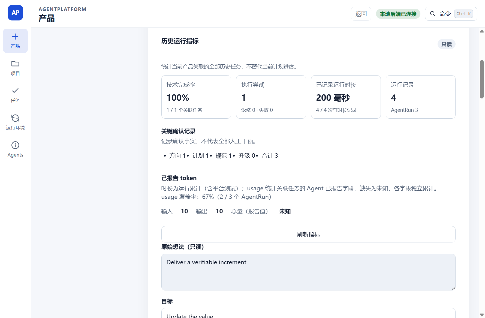

01 / GOAL & REALITY
目标与现实，分开陈述
同一个仓库里存在不同等级的证据。先把它们拆开，才能正确理解“做成了什么”。
最初目标
从产品目标到可用产品
- 用户提交产品目标
- 主 Agent 规划与拆分
- 多个 Agent 协作实现
- 平台验证、整合与交付
停止时的现实
核心产品闭环没有运行
- 可验证成果
- 一次受控单 Task 功能路径
- 正式产品试点
- 规划资格门禁阻断
- 模型调用 / 开发 Task / AgentRun
- 0 / 0 / 0
- 用户产品交付
- NOT_RUN
证据边界：Architect → Worker → Reviewer 是单 Task 串行角色链；动态多 Agent 产品协作尚未实现。
02 / CONTROLLED TASK
平台拥有事实，Agent 提交候选
这条链让一次代码改动可审查；自主产品开发仍未完成。
-
01
批准 TaskSpec
用户确认范围、验收标准和测试命令；写入阶段只接受已批准规范。
-
02
隔离 Attempt
平台核对 clean 状态与 base SHA，再创建唯一分支和受管 worktree。
-
03
运行 Worker
Codex CLI 在受限工作区写入；超时、取消与输出异常分别留痕。
-
04
平台测试与硬门禁
平台执行已批准测试并检查 Diff、范围和证据；硬门禁失败后流程停止。
-
05
只读终审与交接
Reviewer 不修改 worktree；用户收到分支、Diff 与证据，平台不自动提交、推送或合并。
03 / FORMAL PILOT
第一次正式产品试点，停在派发之前
NOT_QUALIFIED
真实产品目标成功保存，但正式 App 请求主 Agent 规划时，资格状态为不可用。授权未被使用并随后撤销。
- 已完成保存产品目标
- 在此停止请求主 Agent 规划
RUNTIME_NOT_QUALIFIED - 未运行Agent 派发
- 未运行开发、验证与交付
具体接缝：正式启动创建规划器时没有导入已验证的 CLI / profile / schema / 环境资格；规划器资格参数缺省为 false。运行时资格需要完整的验证与 App 绑定流程。
04 / UI EVIDENCE
界面记录了技术状态，产品闭环仍未运行

05 / ENGINEERING TRADE-OFFS
工程取舍与源码入口
每一项都同时给出选择、代价与实现位置。源码保留停止开发时的真实边界。
取舍 01
平台运行测试，不采信完成声明
退出码、Diff、哈希与平台 TestRun 才是事实。代价是编排器需要维护更多状态和证据身份。
取舍 02
worktree 管版本边界，沙箱管权限边界
干净基线和独立 Attempt 负责版本审查边界；执行器沙箱另行负责权限边界。
取舍 03
硬门禁结果高于 Reviewer 判断
终审只读且必须核对证据身份；这提高了可审计性，也让流程无法靠模型文字绕过失败。
取舍 04
未取得资格，就明确停止
规划器默认不可用避免伪造正式能力；同时暴露了资格流程未接入正式 App 的产品缺口。
CASE CONCLUSION
保留下来的机制与未完成的目标
仓库保留了受控执行、硬门禁、证据哈希和版本化目标。正式规划资格、动态多 Agent 协作和真实产品交付停留在未完成状态。